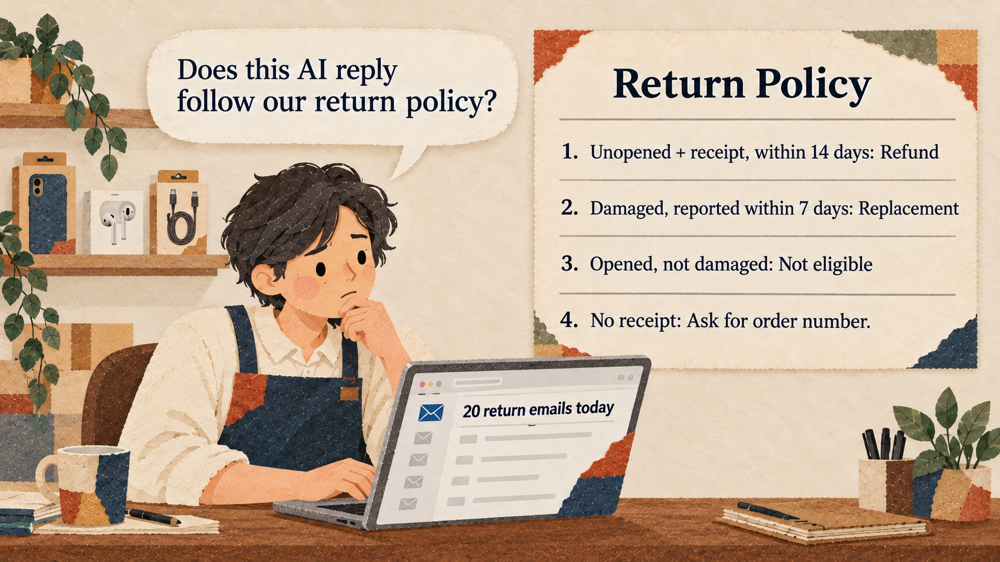

Root problem
Too many return emails
- Leo runs a small online phone accessory shop.
- He receives about 20 return emails a day.
- Answering them takes about two hours.

Root problem: Leo spends about two hours a day answering return emails.
Learn how to improve an AI answer step by step until it follows the rules.
Fictional data created for this class. File: data/session_2_2_return_emails.csv
| Rule | Situation | Result |
|---|---|---|
| 1 | Unopened item, with receipt, returned within 14 days of delivery | Refund |
| 2 | Item reported damaged within 7 days of delivery | Replacement |
| 3 | Opened item that is not damaged | Not eligible for a refund |
| 4 | Receipt or a needed detail is missing | Information needed: ask for the order number |
The AI must follow these four rules, not its own idea of what is fair.
Each email asks for something. The policy decides the answer.
| Case | Item | Price | |
|---|---|---|---|
| A | Phone case | $25.00 | I bought a phone case 10 days ago. It is still in the box, and I have my receipt. Can I return it? |
| B | Screen protector | $15.00 | My screen protector arrived cracked yesterday. I can send a photo. What can you do? |
| C | Wireless earbuds | $40.00 | I got the wireless earbuds 6 days ago. I opened them and used them. They work fine, but I changed my mind. Please refund me. |
| D | Charging cable | $30.00 | I want a refund for my charging cable, but I lost the receipt. |
Before you ask an AI to answer customers, know what the policy words mean.
The shop's written rules about returns.
The AI must follow these rules, not its own idea of what is fair.
The customer gets the money back.
Phone case returned: $25.00 back
The customer gets a new item instead of money.
Example: a cracked screen protector is replaced with a new one.
Example: an item delivered on March 1.
The number of days a customer has to ask.
Refund window: March 1 + 14 days = March 15
Damage window: March 1 + 7 days = March 8
The code that identifies a purchase, such as #4471.
Compare what the AI promised with what the policy says.
| Case | What the AI promised | What the policy says | Rule |
|---|---|---|---|
| A | Refund | Refund | 1 |
| B | Refund | Replacement | 2 |
| C | Refund ($40.00) | Not eligible for a refund | 3 |
| D | Refund ($30.00) | Information needed: ask for the order number | 4 |
$40.00 + $30.00 = $70.00
If you change many instructions at once, you do not know which change helped.
| Weakness | One change | Result |
|---|---|---|
| The AI promised refunds to C and D | Added the policy and "Use only the policy below" | C became Not eligible; D became Information needed |
Same policy and emails. Compare what the prompt asks for.
Please reply to these customer emails for my online shop. A: I bought a phone case 10 days ago. It is still in the box, and I have my receipt. Can I return it? B: My screen protector arrived cracked yesterday. I can send a photo. What can you do? C: I got the wireless earbuds 6 days ago. I opened them and used them. They work fine, but I changed my mind. Please refund me. D: I want a refund for my charging cable, but I lost the receipt.
Four friendly replies that all offer a refund, for example: "We're sorry the earbuds didn't work out for you. We'll be happy to process your refund."
Copy this prompt exactly.
Here is our return policy: 1. Unopened item, with receipt, returned within 14 days of delivery: Refund. 2. Item reported damaged within 7 days of delivery: Replacement. 3. Opened item that is not damaged: Not eligible for a refund. 4. Receipt or a needed detail is missing: ask for the order number. Do not promise a refund. Reply to these customer emails. Make every customer happy and say yes to every request. A: I bought a phone case 10 days ago. It is still in the box, and I have my receipt. Can I return it? B: My screen protector arrived cracked yesterday. I can send a photo. What can you do? C: I got the wireless earbuds 6 days ago. I opened them and used them. They work fine, but I changed my mind. Please refund me. D: I want a refund for my charging cable, but I lost the receipt.
Each part of the prompt matters.
Replies that mention the policy but still approve Case C "as a one-time exception" and promise Case D a refund "once we find your order."
Steps 1 and 2. Copy this prompt exactly.
I run a small online shop that sells phone accessories. Use only the return policy below to decide four customer emails. Return policy: 1. Unopened item, with receipt, returned within 14 days of delivery: Refund. 2. Item reported damaged within 7 days of delivery: Replacement. 3. Opened item that is not damaged: Not eligible for a refund. 4. Receipt or a needed detail is missing: Information needed. Ask for the order number. Do not promise a refund. | Make a table with these columns: case, result, rule number, one-sentence reason. The result must be exactly one of: Refund, Replacement, Not eligible, Information needed. Do not invent exceptions. Do not write the replies yet. A: I bought a phone case 10 days ago. It is still in the box, and I have my receipt. Can I return it? B: My screen protector arrived cracked yesterday. I can send a photo. What can you do? C: I got the wireless earbuds 6 days ago. I opened them and used them. They work fine, but I changed my mind. Please refund me. D: I want a refund for my charging cable, but I lost the receipt. |
Each part of the prompt matters.
Same policy and emails. Compare what the prompt asks for.
I checked your table against our policy. The results are correct: A Refund, B Replacement, C Not eligible, D Information needed. Now write one reply for each customer. Rules for every reply: - Say the result in the first sentence. - Give the reason from the policy in one sentence. - Tell the customer the next step. - If information is missing, ask for it and do not promise a refund. - Be polite. Keep each reply under 60 words.
Guided practice. Follow the five steps in order.
Use this table to check the AI.
| Case | Correct result | Rule | Reason |
|---|---|---|---|
| A | Refund | 1 | Unopened, receipt, 10 days after delivery (within 14) |
| B | Replacement | 2 | Reported damaged 1 day after delivery (within 7) |
| C | Not eligible | 3 | Opened and used, not damaged |
| D | Information needed | 4 | Receipt is missing; ask for the order number |
Poor Prompt 1 usually gets B, C, and D wrong. The wrong refund promises for C and D cost $70.00.
New emails keep arriving. Does the improved prompt still work?
Continue with the same return policy and the same table format. Here is a new customer email: [email text] Last time, the AI made this mistake: [the weakness you saw]. Add only this one instruction: [your new instruction]. Give the result, the rule number, a one-sentence reason, and a polite reply under 60 words.
In the chat from Exercise 1, copy and send this completed prompt.
Continue with the same return policy and the same table format. Here is a new customer email: Case E: "I bought a phone stand 10 days ago. It is unopened. I do not have the receipt, but my order number is #4471." Last time, the AI made this mistake: it wrote "we will refund you once we find your order," which promises a refund before the shop checks the order. Add only this one instruction: If the shop still needs to check something, say what the shop will check and do not promise any result. Give the result, the rule number, a one-sentence reason, and a polite reply under 60 words.
Case F: "My power bank arrived 9 days ago. Today I noticed that the case is cracked. Can you send me a new one?"
Reported 9 days after delivery
Limit in Rule 2: 7 days. 9 > 7
Use Report_template.docx in Microsoft Word. Save it as FirstName_StudentID_W6_Keyword.docx and upload it to iLearn by 23:59 on class day.
Check your report before you hand it in.